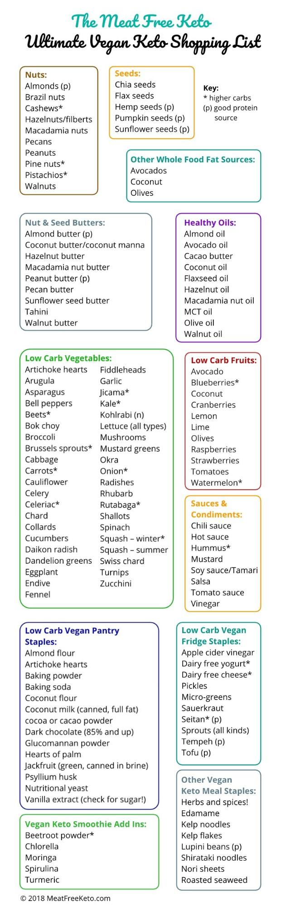
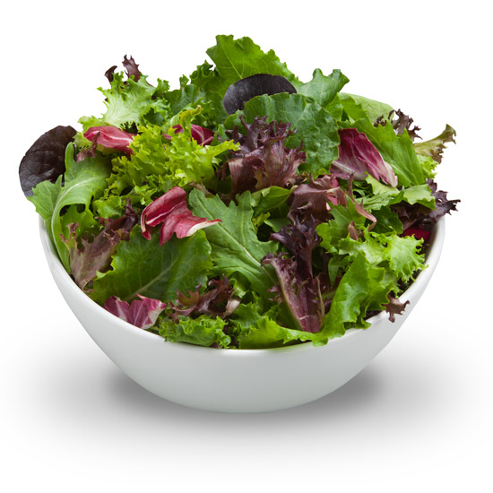
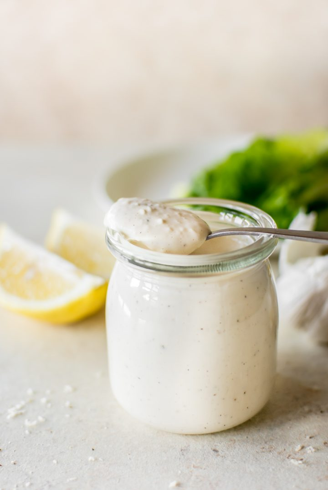
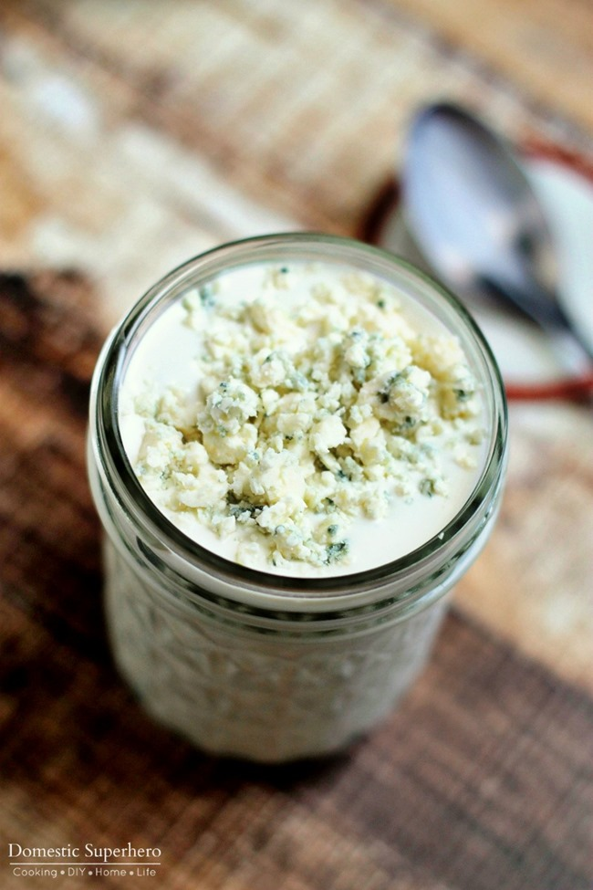

INGREDIENTS
Breakfast
Lunch
- Tuna
- Egg salad
- Salmon skin handroll
- Spring roll
Dinner
- Blue-cheese dressing
- Caesar dressing
- Riced cauliflower to replace bread crumbs
Carb Refeeds
Homemade & Sourdough Breads
Shopping List

Salad Mix

Ready in 5 - 10 minutes
Ingredients
- Spring Mix
- Cucumber
- Onion
- Tomato
- SP&OO = Salt, Pepper & Olive Oil
- (OOPS)=Olive Oil, Salt, Pepper
Preparation
- Chop onion, cucumber, and tomato
- Toss ingredients in large bowl
- Wash & Drain using strainer, then transfer back to serving bowl
Optional Extras
- Avocado
- Nuts/Seeds
- Dried or Fresh Fruit
- Black Beans
- Protein: Egg/Shrimp/Chicken/Steak
Caesar Dressing

Ready in 5 minutes
Serves 4 people
calories
Ingredients
- ½ C Mayo
- 1 T Olive Oil
- ¼ C Buttermilk
- ⅓ C Parmesan
- ¼ C Lemon juices
- 1 clove garlic (minced)
- 1 t salt
- ¼ t Worcestershire
- ⅛ t peper
- 1 T heavy cream (if needed)
Preparation
- Whisk all ingredients together in large bowl
Optional Extras
Blue Cheese Dressing

Ready in 10 minutes
Servings: 4
Per Serving: 375 cal / 36g fat / 9g protein
Ingredients
- 5 oz. Blue Cheese
- ¾ C Greek Yogurt
- ½ C Mayo
- 2 T Parsley
- Salt & Pepper
- 1 T heavy cream
Preparation
- Whisk all ingredients together in large bowl or yogurt tub
Optional Extras
Focaccia

Ready in 2 hours (90 minutes rise/proof)
Servings: 6
Per Serving: cal / g fat / g protein
Ingredients
- 2 ⅓ C flour
- ¾ C warm water
- 1 packet yeast
- 9 T olive oil
- Salt
- 1 T dried rosemary (or 3 fresh leaves)
Preparation
- Combine flour, yeast, and salt in large bowl
- Add water and mix until dough is sticky
- Knead the dough on a lightly oiled non-porous worksurface for 6-8 minutes. It will seem really sticky at first but keep kneading until it becomes smooth and elastic. Tip into a clean, lightly oiled bowl, cover with a tea towel and leave to prove for 1 hour or until doubled in size.
- Oil a heavy baking sheet. Punch down the dough in the bowl then tip out and knead briefly. Put onto the baking sheet and form into rectangle. Leave to rise for 30 minutes until puffed up.
- Drizzle with the rosemary-infused oil and rosemary leaves
- Preheat oven to 425F
- Soak rosemary in 6 T olive oil and set aside
- Bake 20 minutes (should be slightly golden-brown on top)
Optional Extras
Shrimp Fettuccine
Ready in 30 min
Servings: 6
Ingredients
- 1 pkg Fettuccine noodles
- ½ C butter
- 2 oz cream cheese
- 1 pint heavy cream
- 1 C parmesan cheese
- 1 t garlic salt
- 1 t Italian Seasoning
- ½ t pepper
- Olive Oil
Preparation
Sauce
- Melt butter in medium saucepan
- Add cream, cream cheese and parmesan
- Simmer and Mix until all cream cheese and parmesan is melted in and mixture starts to thicken
- Cover saucepan and Turn off heat
Pasta & Shrimp
- Fill a large pot past halfway with water
- Empty frozen shrimp into separate pot or saucepan
- Boil: bring water in both pots to a boil
- Add pasta and 1 T olive oil to pot and cook according to package instructions
- Strain pasta and shrimp, then return to large pot. Mix 1 T olive oil into pasta
Optional Extras